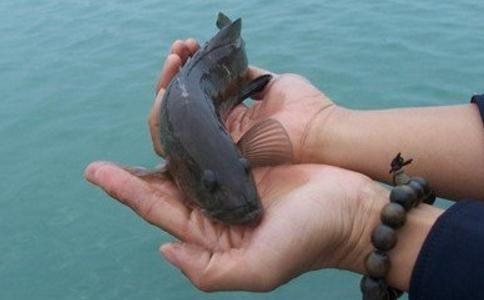

「放生」典出于大乘佛经，盛行 于中国内地，西藏亦然，也流传于日本和邻近的韩国与越南等地。放生的活动是基于众生平等的慈悲精神以及轮回生死的因果观念。所谓「吃它半斤，还它八两」。 放生一事．本意是为了感发世人戒杀护生之心．实行自己恻隐不忍之念而已。每一个人的善根都是不一样的。纵然不能全部感动他们，但是只要感动一人，此一人一 生中即少杀若干生命，况且不止感动一人呢！ 又放生者应该吃素．这样就可以以吃素的利益，与一切有缘人说。如果仍旧食肉，放生之功德也是不可思议的．但自己言行自相矛盾，别人又何能受到劝化呢？如果能够既戒杀又放生护生，当然功德倍增，此等感应灵验的事例，史不绝书。
如一九七四年越南沦陷后，向外流亡的难民一波接着一波，其遭遇有幸与不幸。有的未及逃出越南境内，又被抓了回去；有的在海上漂流，葬身鱼腹；有的虽然逃出 越南，但无收容之所，甚至被遣送回去。不过，根据逃亡成功的难民所述的经验，如果达不成逃出越南的目的，可以请国外亲戚或难民自己买鸟或鱼类放生，只要一 次或两次就会见效，顺利成行。
在《杂宝藏经》卷四记载：有一沙弥的师父见他七日之内寿命将终，要沙弥返回俗家，七天之后再来，但没有说明原因。他在返家的路上，看到一处池塘缺口，池水 灌入池边的蚁巢，众蚁慌张夺路逃生。但是蚂蚁逃生的速度那有池塘缺堤那么快速？眼看无数蚂蚁即将淹死，沙弥就用自己的袈裟包上土，把池塘缺口堵住，救活了 所有的蚂蚁。过了七天，沙弥在俗家玩得无聊，又回到他师父跟前。师父一见，觉得惊奇，问他这几天之中究竟发生了什么事，沙弥以为师父说他犯了戒做了坏事， 非常恐惧，答说什么也没做。师父是罗汉，即用天眼观察，知他是做了一件小小的好事，那就是救起被淹的蚂蚁。后来这位沙弥转夭为寿，得以长命终老。
放生的根据，最为佛教徒所熟悉的，有两部经。一是《梵网菩萨戒经》，其中提到：「若佛子以慈心故行放生业，一切男子是我父，一切女人是我母，我生生无不从 之受生。是故六道众生皆我父母，而杀而食者即杀我父母亦杀我故身。一切地水，是我先身，一切火风，是我本体，故常行放生，生生受生。若世人见杀畜牲时，应 方便救护解其苦难，常教化讲说菩萨戒，救度众生。」
另一部《金光明经》卷四〈流水长者子品〉，也提到有关释迦世尊往昔行菩萨道的一段记载：当时世尊名叫流水长者子，有一天他经过一个很大的池沼，时逢天旱， 而且有人为了捕鱼，把上游悬崖处的水源堵塞，使得池中水位急速下降。长者子眼见上万大小鱼类濒临死亡边缘，又无法从其上游决堤引水，于是为了救活鱼群，不 得已向当时国王请求派二十只大象，用皮囊盛水运到池中，直到池水满足，并且饲以食料，方才救活这些鱼群。
《梵网戒经》是放生的理论依据，《金光明经》则是开设放生池的依据，其他大乘经如《六度集经》卷三，有赎鳖的放生记载，而另外玄奘三藏《大唐西域记》卷 九，也讲到雁塔的故事。如传说在中印度摩揭陀国有一个小乘的寺院，住着若干小乘比丘，他们本来不禁三种净肉；所谓三种净肉，是指不见为己杀、不闻为己杀、 不疑为己杀的肉类。有一天，一位比丘没有得到肉，正好有一群雁从天空飞过，他就向雁群祷告说：「今日有僧缺供，大菩萨你应该知道时间了。」雁群应声自动堕 地而死。比丘本来不信大乘，不相信雁是菩萨，所以用戏言来调侃大乘，想不到那一群雁就是菩萨显现而来感化他们的。小乘比丘惭愧不已，互相传告：「这是菩 萨，何人敢吃？从今以后，应依大乘，不再食三种净肉。」并且建塔营葬雁体。
可见，放生是从戒杀而衍生的，也可以说，戒杀的进一步必定是放生。戒杀仅是止恶，是消极的善行，放生救生才是积极的善行；如果仅仅止恶而不行善，不是大乘 佛法的精神。因此在中国，从北齐萧梁以来，便提倡断肉食、不杀生；且放生的风气也从此渐渐展开，从朝廷以至民间，由僧众而至俗人，都以素食为尚。而历代政 府为了表示推行仁政，年有数日也定期禁屠；而从中央以至地方，或者为了祈雨禳灾，也都有放生禁屠之举。如梁武帝就曾下诏禁止屠杀生命以祭祀宗庙；梁代慧集 比丘，自燃两臂游历诸州，以乞化所得赎生放生；
陈隋时代的着名佛教领袖，天台宗四祖智者大师见临海渔民捕鱼杀生，大起慈悲，募集善款购买临海一所作放生池，兼为渔民讲经说法，渔民闻法后相继改行转业，好生从善，并献临海江沪溪梁六十三所，达三四百余里，全部作为放生池。现在的杭州西湖，就是大师当年所创的古放生池。
此后由唐至宋及明，无不盛行放生。如唐肃宗时，刺史颜真卿撰有《天下放生池碑铭并序》。宋朝的遵式及知礼两位大师，也极力提倡放生。
明末莲池大师云栖株宏是历代高僧之中提倡放生最积极的一位。他在《竹窗随笔》中有〈如来不救杀业〉、〈食肉〉、〈斋素〉等文；又在《竹窗二笔》中，写有 〈衣帛食肉〉、〈戒杀延寿〉、〈放生池〉、〈医戒杀生〉、〈因病食肉〉等篇；在《竹窗三笔》中，也有〈杀生人世大恶〉、〈杀生非人所为〉、〈人不宜食众生 肉〉等文，鼓励戒杀放生。除了素食的文字之外，他也写了〈放生仪〉及〈戒杀放生文〉，以备大众于放生时，对所用仪式有所依准。在现代人中，有弘一大师书、 丰子恺画的《护生画集》计六册；另有一位蔡念生运辰居士，一生提倡戒杀放生，他编集了历代有关动物也有灵性和感应的故事，成为一书，名为《物犹如是》。
不过，现代社会科技进步，人口密度膨胀，生活空间缩小，要想求得一个绝对安全可靠的放生池和放生区域，是相当困难的。其难处除了渔、猎的网捕射杀与打捞之 外，也有自然环境的限制。如今日的台湾与美国，只有野生动物保护区。此外，有人基于爱心或保护自然环境的立场，劝导社会大众不要乱捕滥杀，以免破坏生物互 相生克的自然协调，也是为了挽救稀珍动物濒于灭种的危机，这些跟佛教放生的本意虽相应但不相同。如果我们仅把要放生的生物无限制地流放在自然景观动物保护 区，到了饱和程度，也会有人以控制繁殖和适量的捕杀等方式来调节其生活空间的。
因此，我们到哪儿放生？如果是鱼，有人用钩钓、网捞；如果是鸟，有人用枪射、网捕。今日的鱼市场和鸟店，所售的商品有些是野生的，有些是来自人工繁殖的鱼 池和鸟园。它们都有各自生存的习性，有些根本没有适应自然环境而自求生存的能力。一定的鱼类必须生存于一定的水质、水深和水流的环境中；买淡水鱼放于大 海，买海鱼放于淡水，都是大问题。如果是鸟园繁殖的鸟类，它们不曾在自然界觅食，便可能甚至不知草丛树林间的草种树果等也可以作为食物；如果放之于原野， 不是饥饿而死就是被其他动物或鸟类捕食而亡。在这种情况下，我们是否还需要放生？是否还应该放生？
这确实是非常不幸的事实，自然环境的限制使得放生运动越来越困难。不过，放生的本意在于当下放生的念头，如希望被放的生物能够延长寿命；至于能够延长多久？我们必须尽到研究、考虑和照顾的责任。比 如说，要放鸟类，就先得考虑放什么鸟、在那儿放、什么时候放，才比较安全有效；放生鱼鳖水族，也当首先研究观察它们的生态、习性和来源，然后选择最适当的 时机，放到我们觉得最安全适合的地方。如果不能求得百分之百的可靠，有百分之五十也不错，即使今天去放生，明天它们又被抓，也是无可奈何的事。
对此，印光大师也有精辟的开示：“大鱼食小鱼．固有此事。放之又遭捕．亦不能无有。若谓小鱼被大鱼食尽无余．则无此事理。放者尽被人复捕去．亦无此事理。 何得如是过虑。譬如救济难民．或与一衣．或与一食．亦可不至即死。在彼则当曰．此一衣一食．何能令彼终身温饱．与之有何利益。不如令彼冻饿而死．便可不至 长受冻饿矣。又如强盗劫人．有力者为之扞御。彼将曰．汝若能扞御彼一生．则为甚善。唯扞御一时．究有何益。反不如任被抢劫一空．后来不至再被抢劫之为愈 也。父母之于子．常常抚育．而慈母不能抚身后之子。彼将谓．既不能抚育．不如杀之之为愈乎。君子修德．不以善小而不为．不以恶小而为之。彼必期于万无一 失．方肯行放生．则令世人尽寿皆不行戒杀放生之事矣。其人将来必膺万无一人能救己于死也．哀哉．痛哉。"
我们的目的是为启发增长放生者的慈悲心和对众生的救济心，至于被放的众生，也有它们自己的祸福因果和因缘。若在放生时，没有存心让它们重遭罗网而受刀俎之 苦，且开示被放的众生，为其说三皈、讲佛法；发愿回向，它们也能从此脱离异类身，转生为人，上升天界，往生净土，发菩提心，广度众生，早成佛道。我们但求 能尽心而为，尽力去做就好。
南无阿弥陀佛
南无观世音菩萨
南无大势至菩萨
南无地藏王菩萨
南无药师琉璃光如来
随喜转发，功德无量！